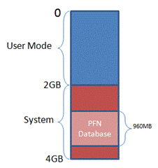
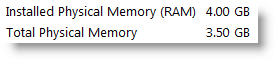

Миф №8: 32-х разрядная операционная система не может использовать все 4 Гб оперативной памяти
Максимальный для 32-разрядных систем объем памяти – это 128 Гб, как указано в спецификации на Windows Server 2003 Datacenter Edition.
Такое ограничение связано с тем, что в более мощных системах структуры, применяемые диспетчером памяти для отслеживания физической памяти, потребляли бы слишком большую часть пространства виртуальных адресов. Диспетчер памяти отслеживает страницы памяти при помощи массива, называемого базой данных PFN, и в целях оптимизации производительности отображает все содержимое этой базы в виртуальную память. Так как каждая страница памяти представлена структурой данных объемом 28 байт, в системе с физической памятью емкостью 128 Гб для размещения базы данных PFN потребуется 930 Мб. В 32-разрядных ОС Windows предусмотрено пространство виртуальных адресов объемом 4 Гб, зависящее от оборудования и по умолчанию распределяемое между текущим процессом пользовательского режима (например, блокнотом) и системой. В таких условиях база данных PFN объемом 980 Мб занимает почти половину из доступных 2 Гб системной части пространства виртуальных адресов, а значит, на отображение ядра, драйверов устройств, системного кэша и других структур данных системы остается всего 1 Гб:

По той же причине в таблице ограничений объема памяти указаны пониженные лимиты при загрузке в режиме /3GB. Дело в том, что для этого режима характерна такая схема разделения физической памяти, при которой процессам пользовательского режима достается 3 Гб, а системе – всего 1 Гб. В целях повышения производительности в ОС Windows Server 2008 для системных нужд резервируется более значимая доля адресного пространства. Для этого максимальный объем физической памяти, поддерживаемый в 32-разрядных версиях ОС, сокращается до 64 Гб.
Но разрушители легенд не были бы разрушителями легенд, если бы они верили на слово. Поэтому они должны это проверить.
Берём виртуальную машину, устанавливаем ей количество ОЗУ в 4 Гб и запускаем. Что же мы видим?

Что-то не очень похоже на обещанные 128 Гб. В чём же дело?
Дело в том, что ограничение в 128 Гб - это ограничение серверных ОС. Клиентские ОС (а Windows XP и Windows 7 - это клиентские ОС) имеют ограничения в 4 Гб.
Ну, это ничего не объясняет. Во-первых, почему такая разница? Это маркетинговый ход? Во-вторых: где же наши обещанные 4 Гб? Мы видим всего 3.5 Гб.
Во-первых, в ходе тестирования Windows выяснилось, что если разрешить использование памяти более 4 Гб, то многие системы аварийно завершают работу, зависают и отказываются загружаться. Происходит это из-за того, что некоторые драйверы устройств (в особенности аудио- и видеоустройств) запрограммированы на работу с физическими адресами в пределах 4 Гб. Эти драйверы, оказывается, обрубают адреса свыше 4 Гб, что приводит к повреждению содержимого памяти со всеми вытекающими последствиями. В серверных же системах, которые, как правило, оснащаются менее специфичными устройствами с относительно простыми и надежными драйверами, подобные проблемы обнаружены не были. Выявленные недостатки экосистемы драйверов заставили применительно к клиентским версиям ОС отказаться от работы с памятью в объеме свыше 4 Гб, несмотря на то, что теоретически её адресация возможна (обращаю внимание, что речь идёт о физической памяти, а не о виртуальном адресном пространстве, которое даже теоретически не может быть больше 4 Гб в 32-х разрядной системе).
Во-вторых, фактический лимит поддержки объема памяти ниже. Кроме того, он зависит от набора микросхем и характеристик подключенных устройств. Дело в том, что в таблицу физических адресов включается не только оперативная память, но и память устройств. При этом, для совместимости с 32-разрядными операционными системами, которые не способны обрабатывать адреса свыше 4 Гб, в системах x86 и x64 память устройств отображается ниже границы адресации 4 Гб. Предположим, что в системе установлено 4 Гб оперативной памяти, а окна в память сетевых адаптеров, аудио- и видеоустройств в сумме составляют 500 Мб, тогда 500 Мб из 4 Гб оперативной памяти окажутся за границей адресации - и мы получим доступные только 3.5 Гб физической памяти.
Даже если система оснащена всего 2 Гб физической памяти, может случиться так, что часть её окажется недоступной под управлением 32-разрядной версии Windows. Причиной тому – наборы микросхем, практикующие агрессивное резервирование областей памяти для устройств. Хотя такой сценарий, конечно, достаточно редок.
Статус мифа: plausible.